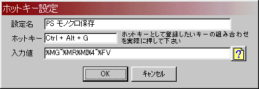
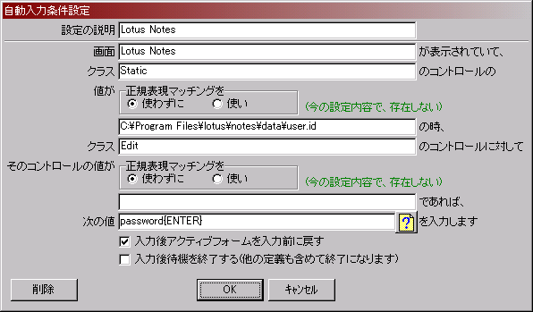

自動入力くん
- 機能説明
- パスワード入力など特定条件に合致する画面に対して登録した文字列の入力を行う
- ホットキー入力によりアクティブな画面に登録した文字列の入力を行う
- 設定
- ホットキー

- ホットキーにキーボード入力を登録します
- ホットキーを押した時、アクティブフォームに対して登録したキー入力を行います
- ホットキーとして同じ組み合わせを複数登録した場合は、選択のためのポップアップメニューを表示し、その中から選択することが可能です
- また、指定したツールを起動させる様に登録することでランチャとしても使えます
- 自動入力条件

- 画面～そのコントロールの値に一致するフォームが表示されている時、そのフォーム・コントロールに対して次の値で指定したキー入力を行います
- 入力後待機を終了するにチェックを付けると、その条件に一致したキー入力後常駐を終了します。これは、他にチェックを付けていない条件が有ったとしても終了します
- 操作
- 実行はEXEファイルを開くだけです
- 終了はタスクトレイのアイコン上の右クリックでメニューがでます
- タスクトレイのアイコン上の右クリックで表示される条件メニューで対象の条件の設定ができます。設定内容はEXEファイルと同じフォルダにiniファイルを作成して保存します
- オプション
- 動作環境
- 動作確認済み環境
- Windows 8.1 Pro.(32bit)
- Windows 7 Pro.(64bit)
※実行は32bit
- Windows Server 2003 Ent. SP2(評価ビルド3790)
- Windows XP Pro.(32bit)
- 開発環境
- Windows 8.1 Pro.(32bit)
- Delphi 6 Pro. + Update Pack 2
- その他・既知の問題点
- 簡易インストールの導入に伴い、インストールと同時にスタートアップに登録される様になりました。Ver0.9.1までお使いでスタートアップに登録して使用されている場合、２重でスタートアップに登録されてしまうことになると思われますので、以前に登録されていた方のショートカットは削除していただけます様お願いします
- アンインストールはコントロールパネルのアプリケーションの追加と削除より行って下さい。ただし、インストールしたフォルダにiniファイルが残りますのでそれについては手動で削除して下さい
- チェック間隔が短くチェックする毎に該当する様な条件設定を行うと右クリックのメニューが表示できなくなります。一旦終了させるか、対象フォームを閉じてから設定を変更/削除して下さい
- MS Word2000に漢字を入力すると文字化けしてしまいますが今のところ未解決です
- ライセンスについて
- 本製品はフリーウエアです。使用に際してライセンス登録／費用などは一切必要ありません
- 再配布について
- 本製品の著作権は 北村 に属します
- 基本的に再配布は自由です。再配布の際は、当方で配布しているファイル形式をそのままで配布してください。配布の際の報告などは義務づけません
- 免責
- 本製品の使用により生じるいかなる損害に対してもその法的根拠に関わらず作者は責任を負いません。これに不服がある場合は本製品を利用しないで下さい
- 連絡先
- 履歴
- -- Ver 0.33.26 2014/10/19 -- (当サイトでのみ公開中)
- -- Ver 0.33.25 2014/09/23 -- (非公開)
- -- Ver 0.32.25 2014/09/03 -- (当サイトでのみ公開)
- POS/SIZEのパラメータ解釈の拡張の不具合修正。
- -- Ver 0.32.24 2014/09/01 -- (当サイトでのみ公開)
- 入力フォーカスの無いフォームが対象となる自動入力時に必ず管理者として実行になってしまっていたのを修正。
- -- Ver 0.32.23 2014/08/31 -- (当サイトでのみ公開)
- -- Ver 0.31.23 2014/08/30 -- (当サイトでのみ公開)
- 自動入力先のプロセスが管理者として実行しているときにも自動入力が行えるように変更。
- キー押下が解放されなくても一定時間経過後に自動入力を開始するように変更。
- -- Ver 0.30.23 2013/02/11 -- (当サイトでのみ公開)
- 自動入力条件設定画面で「そのコントロールの値が今の設定で存在する」表示を「であれば」が空白でも表示するように修正。
- -- Ver 0.30.22 2011/03/22 -- (VECTORにて公開中)
- -- Ver 0.29.22 2010/12/05 -- (当サイトでのみ公開)
- 自動入力条件設定画面で画面に入力のあるときの右ボタンによるコントロール参照ができなくなっていたのを修正。
- -- Ver 0.28.21 2010/10/10 -- (当サイトでのみ公開)
- -- Ver 0.27.21 2010/10/07 --
- ホットキーがNumキーに割り当てできなかったのを修正。
- -- Ver 0.27.20 2010/04/26 -- (VECTORにて公開)
- 前の修正で自動入力対象のコントロールが使用不可の時、入力ができなくなっていたのを修正。
- -- Ver 0.27.19 2010/04/24 -- (VECTORにて公開)
- 内部処理の見直し。keybd_eventの使用箇所をSendInputに変更した。
- 自動入力条件でクラスのコントロールに対しての指定をした際、入力動作の中でフォーカスを移動させる操作ができなかったのを修正。
- -- Ver 0.27.18 2010/04/17 -- (当サイトでのみ公開)
- 内部処理の見直し。keybd_eventの使用箇所をSendInputに変更した。
- -- Ver 0.26.18 2010/03/27 -- (非公開)
- -- Ver 0.25.18 2009/09/29 -- (当サイトでのみ公開)
- -- Ver 0.24.18 2009/06/15 -- (VECTORにて公開)
- 対象Windowが見つけられないことがあったのを修正。
- -- Ver 0.24.17 2009/04/14 -- (当サイトでのみ公開)
- 内部処理の見直し。keybd_eventの使用箇所の一部をSendInputに変更した。
- -- Ver 0.23.17 2009/03/12 -- (当サイトでのみ公開)
- -- Ver 0.22.16 2008/12/02 -- (当サイトでのみ公開)
- 各設定内容の保存が1000文字程度でおかしくなってしまっていたのを4000文字程度まで拡げた。
- -- Ver 0.22.15 2008/11/28 -- (当サイトでのみ公開)
- 日本語入力時、エディットコントロール枠をはみ出す様な入力をすると入力済み文字がスクロールして、キャレット位置が変動しないため、二重入力されてしまうケースがあったのを修正。
- -- Ver 0.22.14 2008/11/13 -- (当サイトでのみ公開)
- 一連の処理終了後、NumLockが復帰しないことがあったのでタイミングを再調整。
- 一連の処理終了後、次の定義を処理するまで1.5秒待っていたのを0.2秒にしてみた。
- -- Ver 0.22.13 2008/09/17 -- (当サイトでのみ公開)
- 一連の処理終了後、NumLockが復帰しないことがあったのでタイミングを調整。
- -- Ver 0.22.12 2008/08/30 -- (当サイトでのみ公開)
- 日本語の入力をWM_IME_CHARメッセージで行っているが、希にWM_IME_CHARメッセージを処理してくれないアプリケーションがあるため、文字送出後のキャレット位置が変動無い場合はWM_CHARメッセージで送出し直す様に修正。
※今度は希に二重入力されるアプリが出てくるかも^^;
- ホットキー入力で同一キー設定があったときのポップアップメニューをESCキーで閉じた時、アクティブだったフォームをアクティブに戻す様に修正。
- -- Ver 0.22.11 2008/08/27 -- (当サイトでのみ公開中)
- ホットキー入力で同一キー設定があったとき、ポップアップメニューから入力候補を選択した後、メッセージキューを全て処理してから入力を開始する様に修正。
- -- Ver 0.22.10 2008/08/11 -- (当サイトでのみ公開)
- 自動入力条件設定画面で、条件入力中に一致しているかの確認が判定内容の変化時にしかチェックできていなかったのを修正。
- -- Ver 0.22.09 2008/08/08 -- (当サイトでのみ公開)
- 設定内容を暗号化して保存する様にした。
- 自動入力条件で判定テキストに改行を含む場合の考慮を追加。\nの指定で改行文字(\x0A)に一致する様にした。この影響で\文字に一致させる場合は\\と指定することとする。
- -- Ver 0.21.09 2008/08/07 -- (当サイトでのみ公開)
- 自動入力条件の設定に設定の説明(メニューのタイトルとしても利用)を付けられるようにし、ソート順も変更した。
- 自動入力条件の設定を削除すると正規表現マッチングを使うかどうかの設定が失われてしまうことがあったのを修正。
- キー入力開始のタイミングでWaitを入れるようにした。これまで入力値の先頭に{SLEEP 100}・・等と指定していたのが無しでも入力開始する様になる。だろう。。。
- 自動入力条件の設定から設定内容を削除できる様にした。
- -- Ver 0.20.08 2008/06/15 -- (VECTORで公開)
- キーボード入力の特殊指定として、{TEXT s}を追加した。
- -- Ver 0.19.08 2008/06/08 --
- 自動入力条件設定画面で、条件入力中に一致しているかを確認できる様にした。
- -- Ver 0.18.08 yyyy/mm/dd --
- -- Ver 0.17.08 2007/04/15 -- (当サイトでのみ公開)
- キーボード入力の特殊指定として、{CAPTION s}を追加した。
- -- 0.16.08 2007/04/07 --
- キーボード入力の特殊指定として、{POS x,y}、{SIZE w,h}を追加した。
- -- Ver 0.15.08 2006/11/27 --
- キー入力対象のアプリが応答なしの時の対応でメモリの解放漏れがあったのを修正
- -- Ver 0.15.07 2006/10/29 -- (当サイトでのみ公開)
- キー入力対象のアプリが応答なしの時のタイムアウトに対応してみた
- -- Ver 0.14.07 不明 --
- -- Ver 0.14.05 2004/05/04 -- (当サイトでのみ公開)
- (BUG)テンキーの単独１個をホットキーにした場合に、キー押下が開放されずエラーが表示されてしまっていたのに対応してみた
- -- Ver 0.14.04 2004/04/23 -- (非公開)
- キー入力させる値に実際のキー操作が含まれていないときアクティブフォームにキー入力できるかどうかの待機をしない様にした
- (BUG)自動入力条件の新規で入力後アクティブフォームを入力前に戻すの設定が保存できていなかったのを修正
- -- Ver 0.14.03 2004/04/17 -- (非公開)
- 処理負荷の軽減。Iniの読み込みを一度だけにする様にした
- -- Ver 0.14.02 2004/04/08 -- (非公開)
- -- Ver 0.14.01 2003/11/18 -- (VECTORにて公開)
- (BUG)入力後アクティブフォームにフォーカスを入力前に戻す様にした際、自動入力条件の削除で設定内容が崩れ、入力後待機を終了する様になってしまったりしたのを修正
- -- Ver 0.14.00 2003/10/16 --
- ホットキー設定に設定名を登録できる様にし、ソート順も変更した
- -- Ver 0.13.00 2003/07/24 --
- 自動入力条件設定で「画面」で右クリックして表示するポップアップメニューにクラス名一覧を追加した
- 右クリックして表示するポップアップメニューをソートする様にした
- 自動入力で画面とクラスに一致する画面が複数存在した場合、いままでは最後の一つのみに自動入力していたが見つかったすべての画面に対して順次入力を行う様にした。このため、入力後アクティブフォームを入力前に戻すオプションを付けた（初期値はOn）
- -- Ver 0.12.03 2003/01/17 --
- (BUG)Ver0.12.02の修正でホットキーの設定を削除した後ホットキー入力を行うと間違った内容が選択される事が有ったのを修正
- -- Ver 0.12.02 2003/01/10 --
- (BUG)Ver0.12.01の修正でホットキーの設定を削除した際入力値に"(ダブルコーテーション)が付いてしまうのを修正
- -- Ver 0.12.01 2003/01/06 --
- (BUG)ポップアップメニューの表示順(ソート順)が途中に空白を含む場合と含まない場合でおかしくなっていたのを修正
- -- Ver 0.12.00 2002/12/26 --
- 自動入力の対象コントロール判定で正規表現マッチングを使える様にした。ダイアログの改行付き長いメッセージへのマッチングができなかった事に対応できる様になったかと思います
- -- Ver 0.11.05 2002/12/20 --
- (BUG)キーストロークの繰り返しが機能しないケースがあったのを修正（例：{TAB 3}{DOWN 2}が{TAB}{TAB}{TAB}{DOWN}{DOWN}と違う結果になる）
- -- Ver 0.11.04 2002/11/28 --
- (BUG){EXEC s}{EXECWAIT s}でCreateProcessしたハンドルを解放していなかったのを修正
- -- Ver 0.11.03 2002/09/15 --
- (BUG)入力値としての ~ がEnterとしてが機能していなかったのを修正
- (BUG)最下位置の内容の変更を行った時にホットキーの設定メニューのソート順がおかしくなるのを修正
- -- Ver 0.11.02 2002/09/02 --
- キーボード押下状態の終了待ちが1000回待っても回避されなければエラーメッセージを表示し中断する様にした
- -- Ver 0.11.1 2002/08/21 --
- 入力対象文字が漢字の場合にキーボード押下中でも処理を行っていたので入力されなかったりする場合があったのをキーボードが離されるのを待つ様に修正
- 入力対象のWindowのIMEがON状態の時正しく入力できなかったのを修正
- -- Ver 0.11.0 2002/08/06 --
- キーボード入力の特殊指定として、{LCONTROL}、{RCONTROL}を追加した
- -- Ver 0.10.0 2002/07/28 --
- ホットキーの設定メニュー表示をソートして表示する様にした
- Ver0.5.2以前からの起動時移行処理を不要と判断しやめた簡易インストーラによるセットアップイメージとした
- -- Ver 0.9.1 2002/07/10 --
- (BUG)半角カナ文字を指定した時、1文字抜け・文字化けしていたのを修正
- -- Ver 0.9.0 2002/07/07 --
- スタートアップへの登録機能を追加した
- 説明文を一部変更
- 連絡先変更
- -- Ver 0.8.3 2002/03/25 --
- 最前面の機能のメニューが残ったままになっていたのを修正した
- -- Ver 0.8.2 2002/03/18 --
- 最前面の機能を削除。ホットキーとの相性が悪かったのとレスポンス悪化のため
- -- Ver 0.8.1 2002/03/15 --
- EXEC/EXECWAITで長いファイル名を使えるようにした。また、パラメータを付けても起動できる様にした。ただし、実行ファイル名およびパラメータに{}は指定できない
- -- Ver 0.8.0 2002/03/14 --
- 最前面の機能を追加。ハマたろうさん作ThroughClockがしばしば背面に隠れてしまうためこの機能を付けてみた
- -- Ver 0.7.0 2002/01/16 --
- キーボード入力の特殊指定として、{SLEEP n}、{EXEC s}、{EXECWAIT s}を追加した。ただし、EXEC/EXECWAITは短いファイル名で指定する事。パラメータは付記できない
- -- Ver 0.6.7 2001/11/14 --
- 対象のコントロールの指定が無いとき、フォーカスの有る項目に入力される様にした
- 登録文字列ヘルプ画面の調整
- -- Ver 0.6.6 2001/11/10 --
- ホットキーでポップアップメニューを表示する際、キーボードで選択可能とした
- -- Ver 0.6.5 2001/11/07 --
- -- Ver 0.6.4 2001/10/30 --
- Win98で日本語の文字化けが発生していたのを修正。WM_IME_CHARを使う様にした
- -- Ver 0.6.3 2001/10/30 --
- -- Ver 0.6.2 2001/10/22 --
- Ver0.6.0の変更でホットキーのメニュー表示内容を変更した結果、ホットキーの設定削除時にメニューに表示している内容をホットキーとして登録してしまう現象を修正
- -- Ver 0.6.1 2001/10/20 --
- CapsLock/NumLock状態がOnの時、Win95/98/NT4で処理後状態が反転するのを修正
- 処理中にキー押されれていれば離されるまで待つ様に修正。ただし、基本的には処理中にキーを押してはいけない(^^
- -- Ver 0.6.0 2001/09/29 --
- ホットキー設定で同じホットキーに複数の設定がされている場合は、対象の画面にポップアップメニューを表示し選択できる様にした
- ホットキーの設定メニューでホットキーのみ表示していたのを、ホットキーと内容（の一部）を表示する様にした
- -- Ver 0.5.4 2001/09/26 --
- 自動入力時に対象画面でフォーカスの有るコントロールへの入力方法を変更し、設定で指定されたコントロールにダイレクトに入力する様にした(効果不明(..;))
- -- Ver 0.5.3 2001/09/10 --
- ホットキー設定を削除した後でも、ホットキーが有効になってしまっていたのを修正
- -- Ver 0.5.2 2001/09/10 --
- 設定値で頭にスペースが入ると詰まってしまうのを修正
- -- Ver 0.5.1 2001/09/10 --
- -- Ver 0.5.0 2001/09/08 --
- ホットキー入力により、アクティブウィンドウにキー入力できる機能を追加
- -- Ver 0.4.5 2001/08/03 --
- CAPSロックがOnの状態の時、小文字が大文字になって入力されてしまうのを修正した
- -- Ver 0.4.4 2001/07/13 --
- 自動入力条件設定画面で入力項目のフォーカスを移すまでOKボタンが使用可にならないのを入力項目の入力時に使用可となる様にした
- -- Ver 0.4.3 2001/07/10 --
- 自動入力条件設定をフォーム名と入力する文字列がBLANKでは確定できなくした
- -- Ver 0.4.2 2001/07/10 --
- -- Ver 0.4.1 2001/07/10 --
- -- Ver 0.4.0 2001/07/09 --
- -- Ver 0.4.0以前 不明 --
- ノーツ起動時のパスワードを自動で入力できるツールとして作成
戻る
いきなりこのページにきてしまった人は、
ここからTOPへ
どうぞ